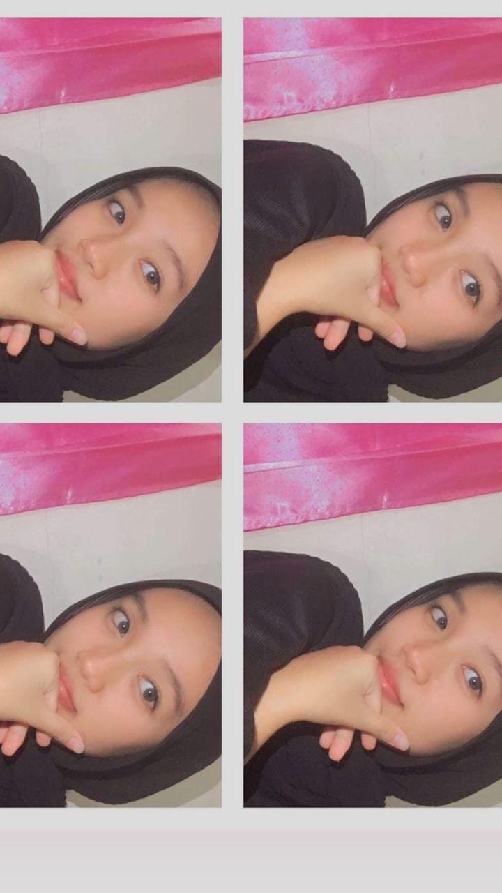

Profil Pustakawan & Pengelola Literasi
Mengenal pustakawan profesional yang siap mendampingi perjalanan akademik dan kebutuhan referensi ilmiah mahasiswa.

Maya Anggraini, S.I.Pust.
| Jabatan | : | Pustakawan dan Pengelola Literasi Digital |
| Institusi | : | Perpustakaan Universitas |
| Program Studi | : | Sistem Informasi S-1 (Dukungan Kurikulum) |
| Email Konsultasi | : | widyaengerasia@unpam-serang.ac.id |
"Pustakawan yang membantu mahasiswa dalam mencari referensi akademik, memanfaatkan sumber informasi digital, dan meningkatkan kemampuan literasi informasi."
Layanan Pustakawan bagi Mahasiswa:
1. Penelusuran Referensi & E-Journal
Membantu mahasiswa menemukan artikel jurnal internasional dan nasional bereputasi untuk tugas kuliah dan skripsi.
2. Bimbingan Sitasi & Manajemen Referensi
Pelatihan langsung teknik sitasi standar IEEE/APA menggunakan aplikasi Mendeley, Zotero, dan EndNote.
3. Pengecekan Similaritas (Turnitin)
Fasilitas uji kesamaan dokumen dan pencegahan plagiarisme karya ilmiah mahasiswa dengan skor resmi universitas.
4. Konsultasi Repository & Literasi Data
Akses akun repositori institusi dan panduan pemanfaatan open-access scientific database secara etis.